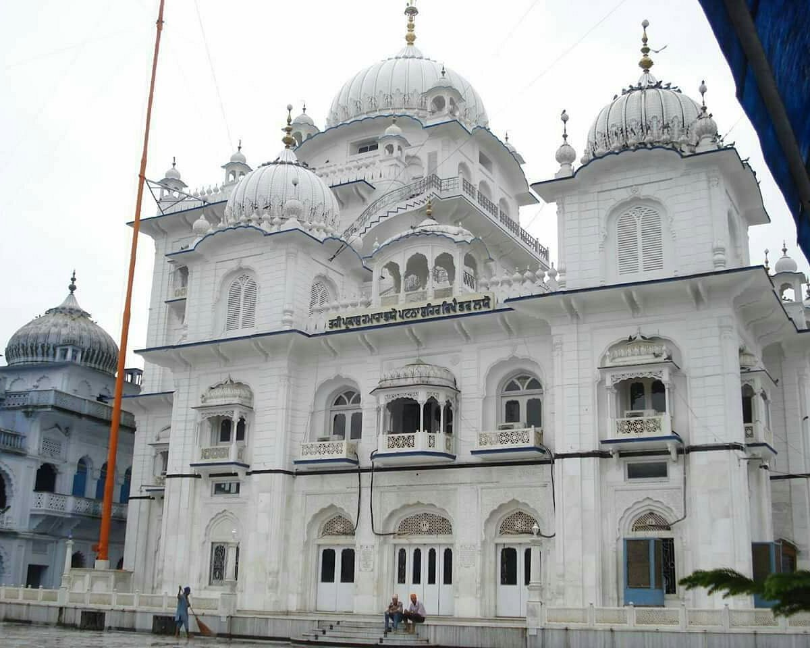
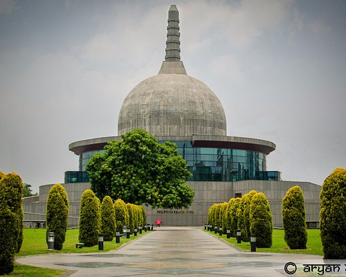

Top Attractions

Golghar
A dome-shaped structure that looks like a beehive Built in 1786 by Captain John Garstin as a grain silo A prominent tourist attraction in Patna The structure is 410 ft wide at the base and 95 ft tall It has two spiral staircases that lead to the top

Takht Sri Sahib
A holy shrine built by Maharaja Ranjit Singh Also known as Harmandir Sahib Located in the old quarters of Patna city

Buddha Smriti Park
Buddha Smriti Park also known as Buddha Memorial Park (as translated in English) is an urban park located on Frazer Road near Patna Junction in Patna, India.